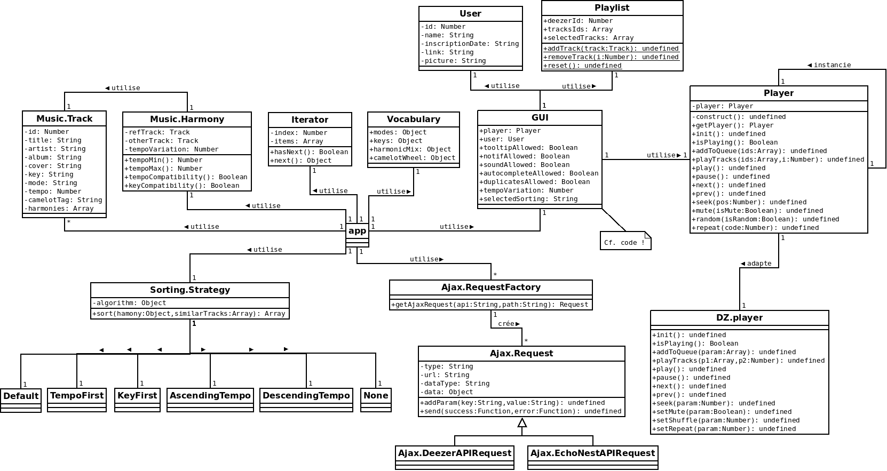

HARMONEEZER
Baptiste Vannesson
M2-DNR2I | Unicaen | 2015-2016
Encadré par Sébastien Delpic
Contexte
Constats empiriques
La
crise
de l'industrie du disque
L'
essor
de la musique numérique
Étude de l'existant
Plateformes de
téléchargement
Plateformes de
streaming
Webradios
APIs
et
bases de données
musicales
Crowdfunding
musical
Projet
Le mix harmonique
Roue de Camelot
Tempo
Tonalité
GUI & UX
Modèle de
navigation
Charte
graphique
Fonctionnalités
Recherche et suggestion de
morceaux pertinents
Gestion des
favoris
Création et gestion de
playlists personnalisées
Sélection d'
ambiance
Synchronisation d'un compte
Deezer
Technique
Environnement de travail
Gestionnaires de paquets :
npm
&
Bower
Preprocessing CSS :
Sass
Workflow avec task runner :
Gulp
Modularisation et empaquetage :
Browserify
Versioning :
Git
&
GitHub
Conception & Développement
Introduction à
JavaScript
Programmation orientée
objet
(
POO
)
Design patterns
utilisés :
Singleton, Factory, Facade, Adapter, Iterator, Strategy, Module, MVVM
Interrogation de deux
APIs RESTful
:
Deezer
&
Echo Nest
(Spotify)
Création d'interface graphique avec
Semantic UI
Documentation
des modules avec
YUIDoc
Tests
:
- unitaires avec
QUnit
- fonctionnels avec
CasperJS
&
PhantomJS
- de performance avec
Benchmark.js

< Retour
Démo
Conclusion
HARMONEEZER
est une application...
... qui s'inscrit en plein dans l'ère de la
musique dématérialisée
... permettant la création de
playlists harmoniques
... front-end entièrement développée en
JavaScript
Merci !
Fermer